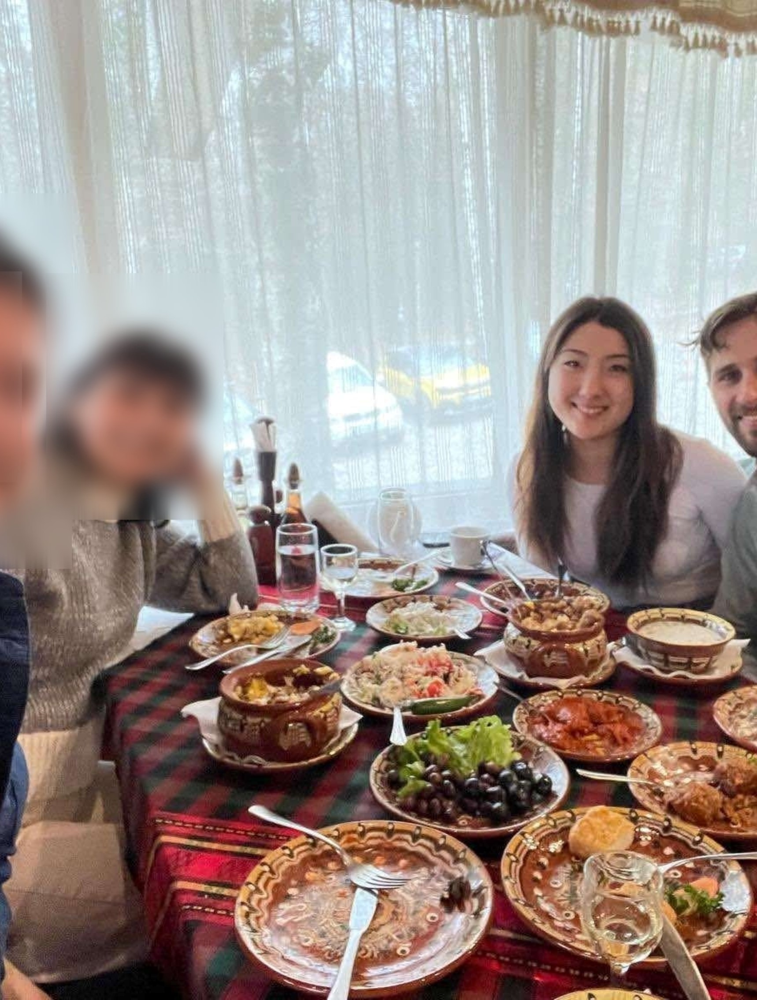
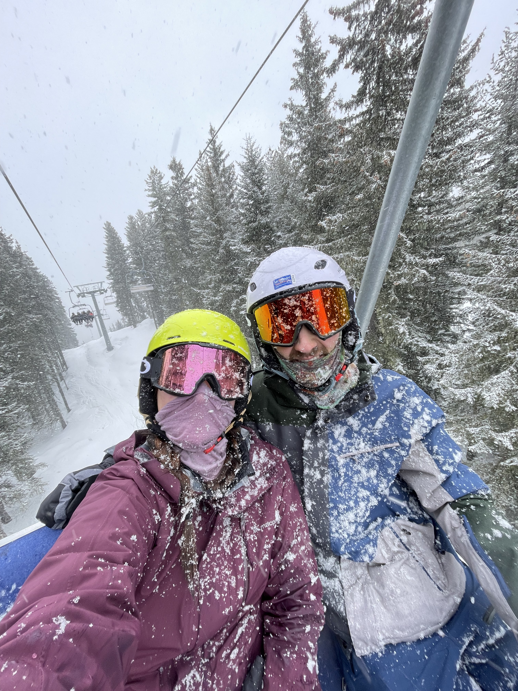
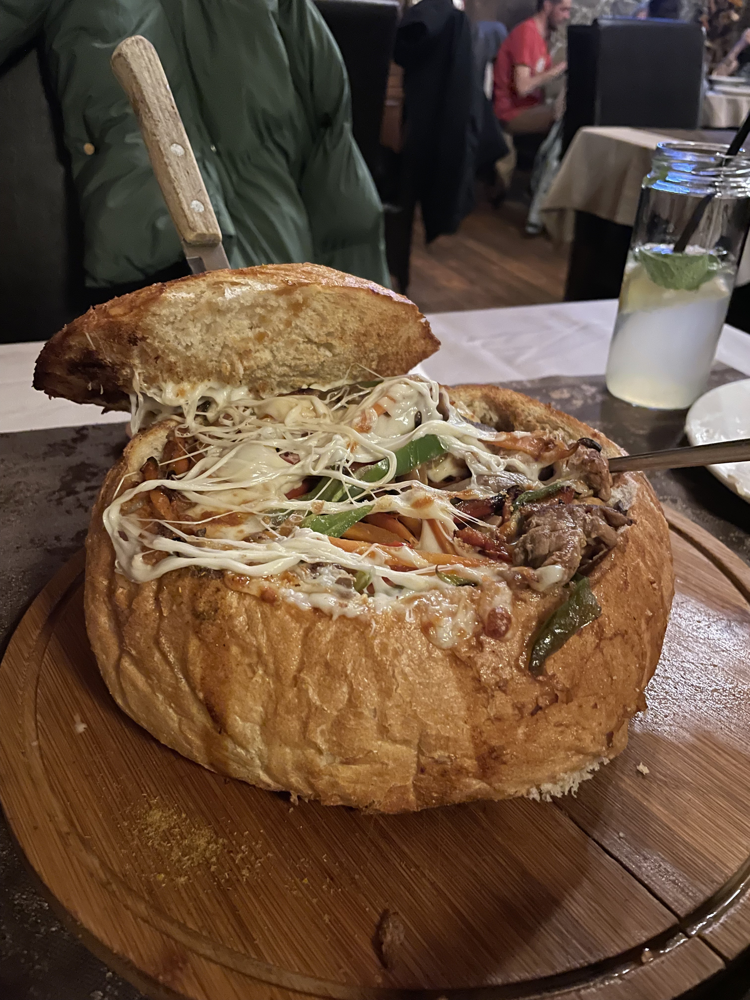
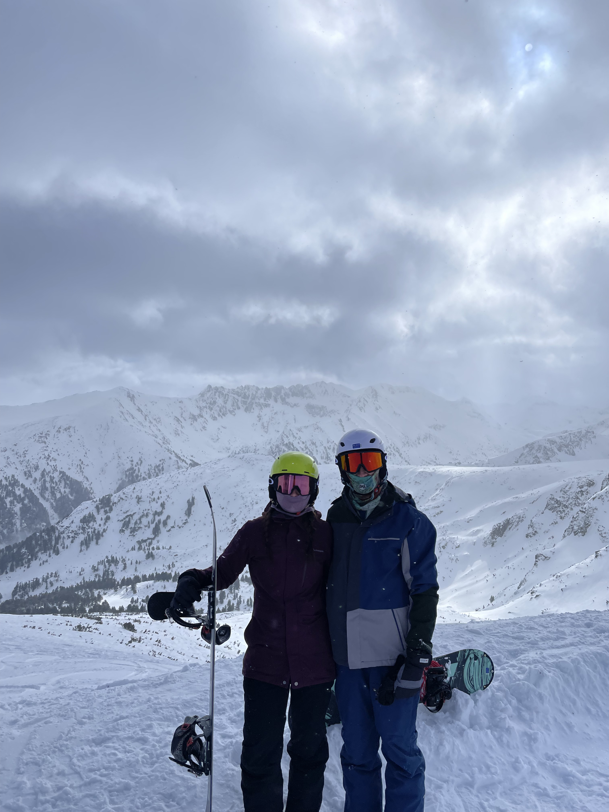

← Travel
Bansko 2025
In mid-February we traveled from London to Sofia, the capital of Bulgaria. We quickly fell in love with the food as we carved down the slopes of Bansko.

15th February 2025
We arrived in Sofia just after midnight and after a few hours of sleep woke up to meet friends for a traditional Bulgarian meal in the mountains above Sofia. The food was delicious with the highlights included the Shopska salad and Lutenitsa sauce. Our friends also introduced us to Rakia, a traditional fruit spirit and explained the traditional dance later that evening that we would unfortunately miss as we almost missed our bus down to Bansko!

16th February 2025
We had rushed to sort out our lift tickets and snowboard rental gear the night before, and we were glad we did because the line to get up the gondola to the resort. After an hour of waiting we were up the mountain and wasted no time in dashing down our first slope in a lovely coating of snow. We both picked up where we left off quickly, although managed a few falls in between. Visibility was low but it was still a great start to the snowboard. After coming down we had a trip to the thermal spa located in nearby Banya. It was a relaxing end to a fun day!

17th February 2025
We both woke up slightly sore but keen to start our 2nd day. Despite getting up earlier we were faced with an even longer line. This time we had 2 different groups trying to push in front of us. We called them out but they didn't leave the line, they waited until we had passed and tried to cut in again. It took us 1.5h to get up to the resort this time. Visibility was still quite low but the runs were quite good. Near the end Sophie and I got split up and couldn't find each other. We spent half an hour trying to look for each other and at last reconciled near the bottom of a run. We went down the mountain early, Sophie taking the gondola and I took the icy ski road to the bottom. To recover we both got full body massages.

18th February 2025
Our last day snowboarding and the line was even longer, almost 2h to get to the resort but the wait was worth it. The skies were so clear and we could see the vastness of the mountains surrounding us. I started off by trying to ride a rail but ended up smacking my face onto the ice and spilling blood everywhere! After recovering Sophie and I discovered a nice off piste line which took us through the trees to the bottom of a chairlift. It was powdery and had lots of small jumps and obstacles for us to practice on. I also lost but luckily recovered one of my gloves after we scoured our previous lines for half an hour. We really enjoyed this last day and took a different line down the ski road to finish the day. We almost ended up on a black run which was almost vertical (and icy). We finished up satisfied and proud of our snowboarding trip!